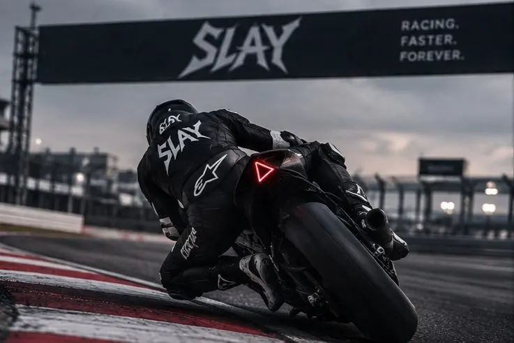
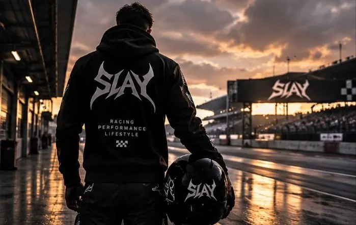
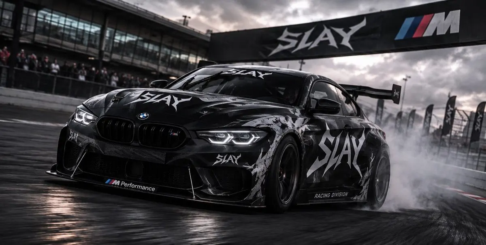
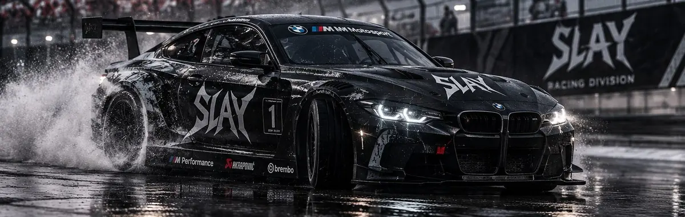
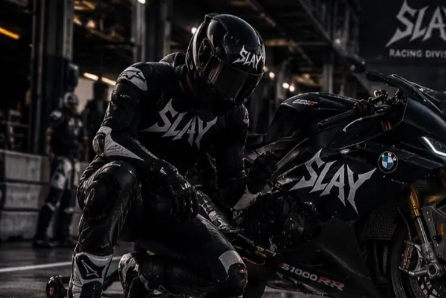

Green · Speed OK
Your speed fits the road ahead. Stay smooth and keep your line.
RACING · PERFORMANCE · LIFESTYLE
Slay Moto turns your phone into a racing co-pilot. Start from your exact location, see every bend colored ahead of you, and get live cues before the corner arrives — then relive the lap as a shareable route image.

THE SLAY WORLD

Gear made for the paddock and the street. Wear the line you ride.

Every limit is pushed on track, never on public roads.

Ride aware, ride ready.

PADDOCK · READYHOW IT WORKS
Slay Moto finds your exact GPS location, names your start point and starts the clock the moment you go.
Plan a route from where you stand. Every bend is analysed and painted on the map before you reach it.
A game-style speed bar, voice alerts and vibration tell you when to ease off and when to brake for the corner.
Finish and get an image of the exact shape of your route, with time, distance, average and top speed.
LIVE RIDE CONSOLE
RACE MODE
Or tap the map to place the point. Lines are 30 m gates; laps are timed by GPS (about ±1 s).
Set your start point, then press start.
DRAG MODE
How it works: press ARM and stand still until it says READY. Pick AUTO START (the clock starts the moment GPS sees you move) or 3 · 2 · 1 COUNTDOWN (you hear the count, then go; reaction time is approximate). Use only on a closed drag strip or track, never on public roads. Timing is from GPS speed, so expect about ±0.2 s on 0–100. A clear view of the sky helps.
LIVE CO-PILOT
Mount your phone, calibrate once and ride your planned route. The co-pilot reads the road ahead, warns you before every bend and tracks your lean angle in real time.
Lean angle comes from your phone's motion sensors (GPS as backup) and is an estimate. Set up before you ride and never operate the phone while moving.
ROAD AWARENESS
Your speed fits the road ahead. Stay smooth and keep your line.
You are a little fast for what is coming. Roll off the throttle.
Too fast for the next section. Voice and vibration alert you.
A sharp bend is coming. Bring your speed right down before you reach it.
Guidance is advisory and based on route geometry only. It cannot see surface, weather, traffic or legal limits. Always ride to the conditions and obey local law.
READY WHEN YOU ARE
Open the ride console, allow location, tap start, and let Slay Moto handle the rest.
YOUR JOURNEY
LOCATION REQUIRED
ROUTE PLANNER
Enter a destination to draw a suggested route. Route planning requires an internet connection and is provided as a convenience, not as certified motorcycle navigation.